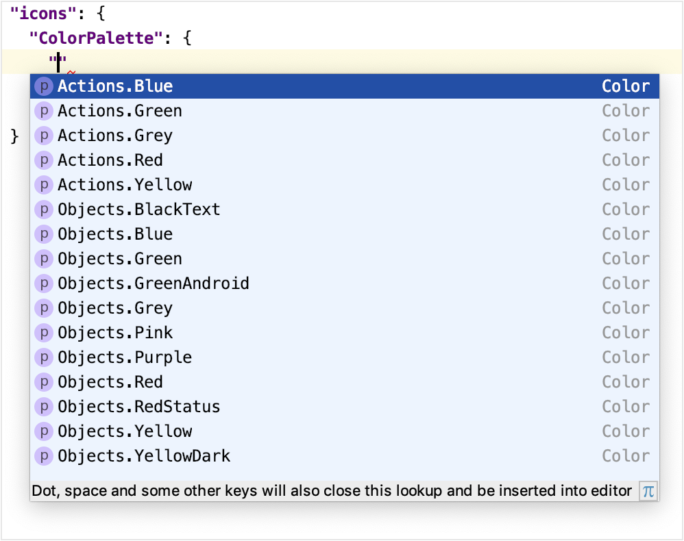
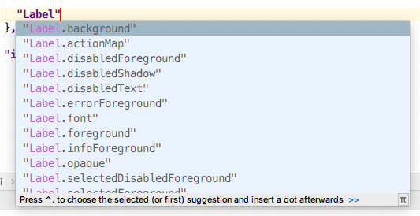

Customizing UI Themes - Icons and UI Controls
A UI Theme is customized by adding information to the UI Theme description file that overrides the base (Light or Darcula) UI Theme.
Introduction to UI Theme Description File Syntax
The syntax of a Theme description file follows the JSON open-standard file format of key-value pairs. The minimum valid default file is the output of the DevKit Theme Wizard. Adding key-value pairs customizes a Theme.
UI Theme key-value pairs often use a color as the value.
Colors are defined by six-digit RGB or eight-digit RGBA hexadecimal notation.
UI Theme Reference Implementations
When learning new syntax, it is often useful to have some existing implementations for reference. For example, refer to the Theme description file for the IntelliJ IDEA High Contrast Theme. It may also be helpful to review some of the UI Themes available at the JetBrains Plugin Repository.
Defining Named Colors
Colors can always be defined individually as six-digit RGB or eight-digit RGBA hexadecimal notation.
However, Theme definitions often use the same color in multiple places.
Maintaining a Theme is more manageable if Named Colors are globally defined in a colors {} block as part of the *.theme.json file.
After that, the Named Color can be used instead of a hexadecimal description of the color.
For example, defining the Named Color basicBackground and then using it to set the background color for panels.
(Don’t be concerned with the "ui" syntax in the example below, it will be discussed in Custom UI Control Colors.)
{
"name": "theme_basics",
"dark": false,
"author": "IntelliJ Platform SDK",
"editorScheme": "/Lightning.xml",
"colors": {
"basicBackground": "#E1E1E1"
},
"ui": {
"Panel.background": "basicBackground"
}
}
Customizing Icons
UI themes can customize the color of default IntelliJ IDEA UI icons, or substitute custom icons for the default ones.
Customization is done by adding an "icons": {} section to the Theme description file.
Overriding the Global Color of Icons
Default global icon colors are customized by adding key-value pairs to a "ColorPalette": {} section.
The ColorPalette must be inserted in the icons section.
In the following example the key - the default red color (#DB5860) used for Action icons in the Light Theme - is overridden to the value of a different color (#D61A26):
{
"icons": {
"ColorPalette": {
"#DB5860": "#D61A26"
}
}
}
This color substitution is applied throughout the IDE UI.
Custom Icon Palette Colors
Icon Palettes are predefined UI Theme color keys, each describing a single color in an Actions or Objects context.
Icon Colors in “Actions” and “Objects” Contexts
IntelliJ IDEA has default icon colors defined for Actions and Objects contexts.
Actionsare Theme keys for icons that appear in the context of toolbars, and represent actions such as Compile, Run, or Debug.Objectsare Theme keys for icons that appear in the contexts of lists and trees, and represent entities like files, symbols, or run and debug configurations.
The JetBrains Platform UI Guideline for Icons
defines the default hexadecimal RGB values of colors for Actions and Objects keys.
Note that this document refers to Objects keys as “Noun icons.”
Customizing “Actions” and “Objects” Icon Colors
An icon Palette color is customized by adding an Actions or Objects key and custom color value to the "ColorPalette": {} section in a Theme description file.
The list of available icon Actions and Objects keys are provided by the completion popup in the editor:

For example, the following key-value pair changes the color for all blue-colored icons on toolbars to the color #5BC0DE:
{
"icons": {
"ColorPalette": {
"Actions.Blue": "#5BC0DE"
}
}
}
This more specific change to the Actions.Blue color overrides the default definition.
It will also, in the narrower context of blue Actions icons, supersede any global color overrides of the default blue icon color.
Custom Icons
The default IntelliJ IDEA UI icons can be replaced by custom icons. The file format for icons is SVG. The JetBrains Platform UI Guideline for Icons has detailed specifications for icons.
An icon replacement is described within the icon {} section of a Theme description file.
Note that icon replacement key-value pairs appear outside of the ColorPalette section.
For icon substitutions, the key is the path to the default icon image.
This path is derived from the AllIcons.[Group].[IconName] path in icon section reported by the UI Inspector.
For example, the Build (hammer) icon in the toolbar has the path Allcons.Actions.Compile as reported by the UI Inspector.
Therefore the key for the Build icon is /actions/compile.svg.
The value is the file name of the replacement icon, located in the resources folder of the UI Theme plugin project:
{
"icons": {
"/actions/compile.svg": "/factory.svg"
}
}
The color of a replaced icon takes precedence over any ColorPalette overrides.
Customizing UI Controls
UI Themes can change the appearance of more general controls in the IntelliJ IDEA UI. Examples of these controls are labels, buttons, checkboxes, trees, lists, and menus.
Custom UI Control Colors
The custom color of a UI control is specified by adding a key-value pair to the "ui": {} section of a Theme description file.
A UI control key has the compound format element.property, where:
elementis the type (label, checkbox, etc.,) of the UI control.propertyis how the color is applied. Examples includeforeground,background, anderrorForeground.
Note that some UI control keys have more than two parts, for example Popup.Advertiser.foreground or ScrollBar.Mac.Transparent.thumbColor.
The full key must be used to customize that specific button control.
However, for other purposes the first section can be considered the element, and the last section considered the property.
Methods for finding UI control keys are in the Finding Attribute Keys for UI Controls section.
Customizing All UI Control Colors with the Same Property
All UI Controls that have the same property portion of their key can be set to the same color.
This customization is done using the wildcard "*": {} section in the Theme description file.
A key-value pair is inserted in this section, but only the property portion of the key is specified.
The value is the custom color.
The following example would change the default background color to #AED7E3 for all UI controls:
{
"ui": {
"*": {
"background": "#AED7E3"
}
}
}
Note that the wildcard "*": {} section must be within the "ui": {} section.
Customizing the Color of Specific UI Control Types
The color of a specific UI control types are changed by adding a key-value pair to the "ui": {} section of a Theme description file.
The key is the full element.property format and the value is the custom color.
The following example sets the background color for all labels to the color #F6E9C9
{
"ui": {
"*": {
"background": "#AED7E3"
},
"Label.background": "#F6E9C9"
}
}
The Label.background entry supersedes, in the narrower context of label backgrounds, any default color as well as any wildcard color assigned to backgrounds.
Customizing the Color of UI Tabs
UI Tab colors are changed by key-value pairs in a Theme description file.
There are two implementations of tabs in the IntelliJ Platform:
- Editor Tabs, which e.g., represent open files in the Editor window, and in Tool Window bars.
- Tabbed Panes, which e.g., are used for the Run/Debug Configurations dialog.
The control keys for UI Tabs were expanded from release 2019.1 to 2019.2 of the IntelliJ Platform. The 2019.1 release control keys are compatible with release 2019.2 and later versions of the IntelliJ Platform.
| Release 2019.1 Element | Release 2019.2 Element | Description of Release 2019.2 Element |
|---|---|---|
| N/A | DefaultTabs |
Applied to all tabs except TabbedPane, unless overridden by a more specific Tab control element. |
EditorTabs |
EditorTabs |
Applied only to Editor tabs. Overrides any DefaultTab settings. 192 has many more property settings than 191. |
ToolWindow.HeaderTab |
ToolWindow.HeaderTab |
Applied only to Tool Window tabs. Overrides any DefaultTab settings. 192 has many more property settings than 191. |
DebuggerTabs |
DefaultTabs |
DefaultTab settings are used instead of DebuggerTabs, except for key DebuggerTabs.underlineHeight. |
TabbedPane |
TabbedPane |
Applied only to Tabbed Panes. |
Plugins.Tab |
TabbedPane |
Use TabbedPane instead. |
SearchEverywhere.Tab |
SearchEverywhere.Tab |
No change. |
Methods for identifying UI control keys are in the Finding Attribute Keys for UI Controls section.
For example, here is an excerpt from the IntelliJ Platform High Contrast Theme:
Note that a Theme file can mix versions of property identifiers:
- The first three
propertyentries are recognized by release 2019.1, and ignored by subsequent releases because they are defined by newpropertyidentifiers. - The
underlineColorpropertyis recognized by release 2019.1 and subsequent releases. - The
underlineHeightpropertywas introduced in release 2019.2, and is ignored by previous releases. - The
underlinedTabBackgroundpropertywas introduced in release 2019.2, replaces the 2019.1selectedBackground, and is ignored by previous releases. - The
inactiveColoredFileBackgroundpropertywas introduced in release 2019.2, replaces the 2019.1inactiveMaskColor, and is ignored by previous releases.
{
"ui": {
"EditorTabs": {
"selectedForeground": "#FFFFFF",
"selectedBackground": "#0e5d73",
"inactiveMaskColor": "#000000FF",
"underlineColor": "#1AEBFF",
"underlineHeight": 4,
"underlinedTabBackground": "#000000",
"inactiveColoredFileBackground": "#00000000"
}
}
}
Customizing the Borders of UI Controls
The color and geometry of borders used in UI controls can be customized by key-value pairs in a Theme description file.
The format of keys for borders is element.property, where:
elementis the type of UI control containing a border, such as a window or a popup menu.propertyis the desired border appearance, for example:borderis the border width (in pixels) specified as top, left, bottom, and right widths. Border color is also (optionally) specified as hexadecimal RGB, e.g. “E6E6E6” with no “#” character.borderInsetsis the inset distance (in pixels) from the edge of theelementto the border. It is specified as top, left, bottom, and right insets.
Methods for identifying UI control keys are in the Finding Attribute Keys for UI Controls section.
Customizing the Border Appearance of Specific UI Controls
The appearance of borders for specific UI control types are customized by adding a key-value pair to the "ui": {} section of a Theme description file.
The following example sets a new border width and color for all windows:
{
"ui": {
"Window.border" : "4, 4, 4, 4, E6E6E6"
}
}
In this example the customized border supersedes the default definition and any global color override.
Finding Attribute Keys for UI Controls
There are hundreds of UI control element.property keys defined in the IntelliJ Platform UI.
Some keys and strategies for applying them can be gleaned from the UI Theme reference implementations.
For a general search, here some suggested methods for locating UI control keys.
Finding a UI Control Key Using Code Completion in the Editor
The preferred method of finding UI control keys is to use the Code Completion feature in the IntelliJ IDEA editor.
Note that some keys presented by the code completion feature may be deprecated.
New entries in the "ui": {} section will invoke the code completion popup, as shown below:

Beginning with version 2019.2 of the IntelliJ Platform, the editor has added features for Code Completion and Quick Documentation to show the release in which a UI control key began to be supported. It appears as the Since attribute in editor popups. In the Quick Documentation popup the format is e.g. Since: 2019.2. The Code Completion popup is similar, but it the format is e.g. [Since 2019.2].
Finding a UI Control Key using Laf Defaults UI
Using the Laf Defaults inspector, enter the element portion of the key.
The Laf Defaults inspector will prompt with a list of UI Control keys and their default color.